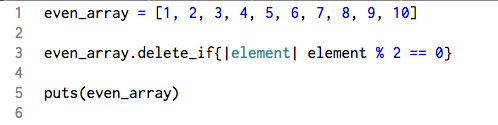
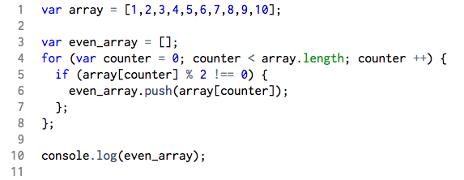

JavaScript Loops Substituting for Ruby Methods
Technical Blog
September 14, 2015
Although underlying concepts of programming can be seen across multiple languages, small differences or built-in method availability can drastically affect languages are written and used. A noticeable difference in style between Javascript and Ruby is the use and importance of loops, and it comes down to built in methods.
For anyone who has transitioned from Ruby to Javascript, one of the things people miss most about Ruby is the wealth and variety of available built-in methods. From simple things like print (prints without a new line) and puts (prints with a new line) to more specific and niche ones like .inject() and .each, the lack of these methods force those who write in Javascript to find alternatives or create their own methods as substitutes. For many of these “alternatives,” many people turn to loops and find creative ways to recreate these missing methods. A common example would be the replacement of enumerable methods.
Ruby is stock full of enumerable methods. So much so that a lot of them serve the same purpose, and a lot of them can be interchanged with one another for their very specific differences. For example, the #collect and #map are not only identical, they both come with ‘destructive’ versions of themselves. In Javascript, there is but one map method.
One example of how loops replace a non-existent method is the #delete_if. This method may be specific, but when needed, it can be very useful. However, (and forgive me if I am mistaken that there is no Javascript alternative) in Javascript an easy way to recreate this method is with a for loop.
Let’s say we want to delete everything in an array that is an even number. In ruby, we can simply use the #delete_if method to do it like this.
However, in Javascript, this might be one way you achieve the same thing.
It should be noted that you can simply place the code above into a method function called “delete_even” and re-use it for times you may need to do this again.
In the end, there are not that many over-arching differences between the loops in Ruby and Javascript like for loops and while loops. Sure there are differences in syntax and the for loops need a bit more than what a typical for loop does in Ruby, but their biggest differences lie it how they are used. Javascript lacks the built-in methods that may make a programmer’s life easier, and thus forces writers to use loops creatively to achieve the same goals.